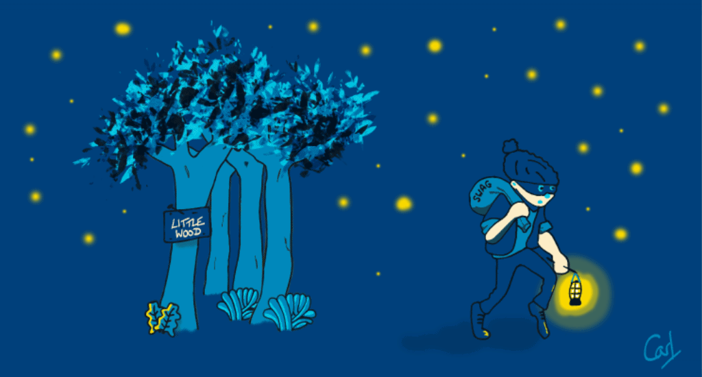
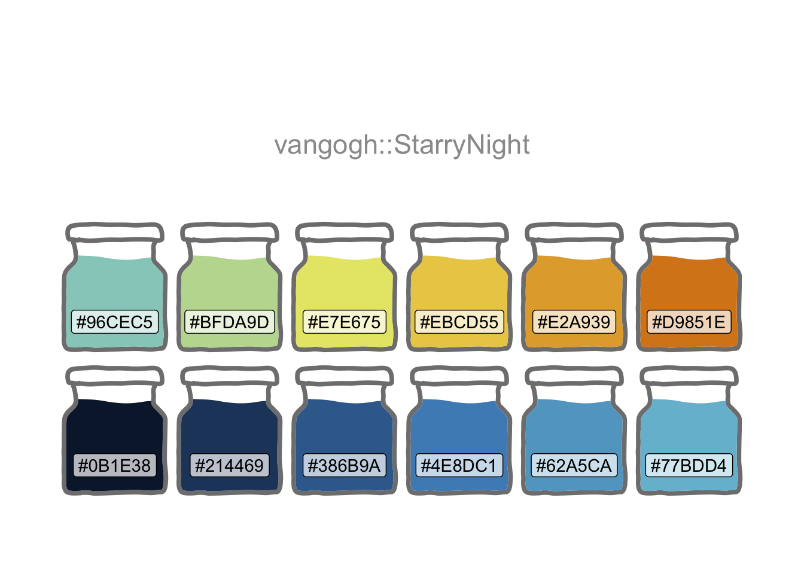
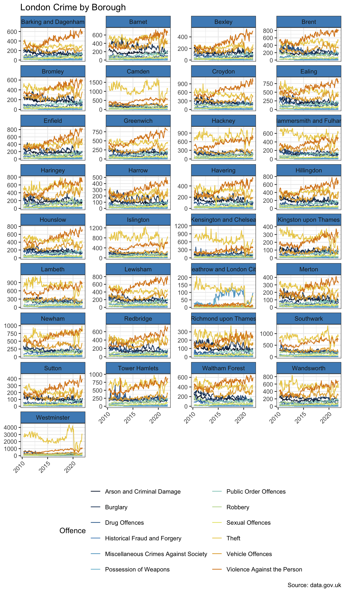

library(conflicted)
library(tidyverse)
conflict_prefer_all("dplyr", quiet = TRUE)
library(trelliscopejs)
library(rbokeh)
library(janitor)
library(vangogh)
library(usedthese)
conflict_scout()Seeing the Wood for the Trees
R
apps
Visualising small multiples when crime data leave you unable to see the wood for the trees

In Criminal Goings-on faceting offered a way to get a sense of the data. This is a great visualisation tool building on the principle of small multiples. There may come a point though where the sheer volume of small multiples make it harder to “see the wood for the trees”. What’s an alternative strategy?
This time I’ll use Van Gogh’s “The Starry Night” palette for the feature image and plots. And there are 9 types of criminal offence, so colorRampPalette will enable the interpolation of an extended set.
theme_set(theme_bw())
(cols <- vangogh_palette("StarryNight"))
cols9 <- colorRampPalette(cols)(9)The data need a little tidy-up.
url <- str_c(
"https://data.london.gov.uk/",
"download/recorded_crime_rates/",
"c051c7ec-c3ad-4534-bbfe-6bdfee2ef6bb/",
"crime%20rates.csv"
)
crime_df <-
read_csv(url, col_types = "cfcfdn") |>
clean_names() |>
mutate(
year = str_extract(year, "(?:1999|200[0-9]|201[0-7])"),
year = as.numeric(year)
) |>
summarise(number_of_offences = sum(number_of_offences),
.by = c(year, borough, offences)) |>
filter(
offences != "All recorded offences",
!borough %in% c(
"England and Wales",
"Met Police Area",
"Inner London",
"Outer London"
)
)This was the original visualisation in Criminal Goings-on using ggplot’s facet_wrap.
crime_df |>
mutate(borough = str_wrap(borough, 11)) |>
ggplot(aes(year, number_of_offences, colour = offences, group = offences)) +
geom_line() +
facet_wrap(~borough, scales = "free_y", ncol = 4) +
labs(
x = NULL, y = NULL, title = "London Crime by Borough",
colour = "Offence", caption = "Source: data.gov.uk"
) +
scale_colour_manual(values = cols9) +
guides(colour = guide_legend(nrow = 3)) +
theme(
strip.background = element_rect(fill = cols[4]),
legend.position = "bottom",
axis.text.x = element_text(angle = 45, hjust = 1)
)
There are some nice alternatives which allow one to go deeper into the data whilst making the whole experience more consumable and engaging.
Switching facet_wrap for facet_trelliscope is a simple option. Or trelliscope(Hafen and Schloerke 2021) may be used in combination with the rbokeh (Hafen 2021) (or plotly) packages. Irrespective of the option chosen, one can more flexibly display the several hundred “small multiple” panels required to go deeper into the crime data.
Pairing trelliscope with rbokeh permits the addition of some custom cognostics and additional interactivity. The slope cognostic, for example, enables filtering on the boroughs and types of offence exhibiting the steepest upward or downward trends.
slope <- \(x, y) coef(lm(y ~ x))[2]
plot_data <- crime_df |>
nest(.by = c(borough, offences)) |>
mutate(
additional_cogs = map_cog(
data,
~ tibble(
slope = cog(slope(.x$year, .x$number_of_offences),
desc = "Steepness of the trend"
) |>
round(2),
mean_count = cog(mean(.x$number_of_offences),
desc = "Average count"
),
iqr_count = cog(IQR(.x$number_of_offences),
desc = "Interquartile range"
)
)
),
panel = map_plot(
data,
~ figure(xlab = "Date", ylab = "Count") |>
ly_lines(year, number_of_offences, color = cols[5],
width = 2, data = .x) |>
ly_points(year, number_of_offences,
size = 10,
fill_color = cols[9],
hover = number_of_offences, data = .x
) |>
theme_plot(
background_fill_color = cols[2],
background_fill_alpha = 0.5
)
)
)
Note
A Github issue has been raised as the trelliscope will not render (knit) when publishing the page. Running the code chunks will however generate the expected trelliscope.
So, to get the trelliscope below: 1) run all the code chunks to generate the appfiles folder. 2) Set the following chunk to #| eval: false. 3) Use an iframe to display the index.html in the appfiles folder. 4) Set resources: project/wood/appfiles/ under project: in the _quarto.yml file to ensure the appfiles folder is included in _static.
plot_data |>
trelliscope(
name = "London Crime",
desc = "Source: data.gov.uk",
nrow = 2,
ncol = 3,
state = list(
sort = list(sort_spec("slope", dir = "desc")),
labels = c("borough", "offences", "slope")
),
path = "appfiles"
)R Toolbox
Summarising below the packages and functions used in this post enables me to separately create a toolbox visualisation summarising the usage of packages and functions across all posts.
| Package | Function |
|---|---|
| base | as.numeric[1], c[4], library[7], list[2], mean[1], round[1], sum[1] |
| conflicted | conflict_prefer_all[1], conflict_scout[1] |
| dplyr | filter[1], mutate[3], summarise[1] |
| ggplot2 | aes[1], element_rect[1], element_text[1], facet_wrap[1], geom_line[1], ggplot[1], guide_legend[1], guides[1], labs[1], scale_colour_manual[1], theme[1], theme_bw[1], theme_set[1] |
| grDevices | colorRampPalette[1] |
| janitor | clean_names[1] |
| rbokeh | figure[1], ly_lines[1], ly_points[1], theme_plot[1] |
| readr | read_csv[1] |
| stats | IQR[1], coef[1], lm[1] |
| stringr | str_c[1], str_extract[1], str_wrap[1] |
| tibble | tibble[1] |
| tidyr | nest[1] |
| trelliscopejs | cog[3], map_cog[1], map_plot[1], sort_spec[1], trelliscope[1] |
| usedthese | used_here[1] |
| vangogh | vangogh_palette[1] |
References
Hafen, Ryan, and Continuum Analytics, Inc. 2021. “Rbokeh: R Interface for Bokeh.” https://CRAN.R-project.org/package=rbokeh.
Hafen, Ryan, and Barret Schloerke. 2021. “Trelliscopejs: Create Interactive Trelliscope Displays.” https://CRAN.R-project.org/package=trelliscopejs.